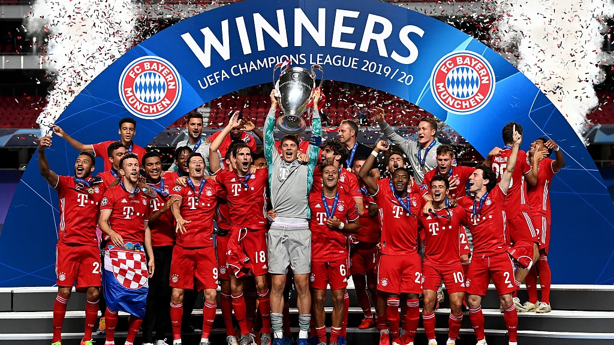

UEFA Champions League
| Club |
Titles |
Seasons won |
| Real madrid |
14 |
1956, 1957, 1958, 1959, 1960, 1966, 1998, 2000, 2002, 2014, 2016, 2017, 2018, 2022 |

| Milan |
7 |
1963, 1969, 1989, 1990, 1994, 2003, 2007 |
| Bayern Munich |
6 |
1974, 1975, 1976, 2001, 2013, 2020 |
| Liverpool |
6 |
1977, 1978, 1981, 1984, 2005, 2019 |
| Barcelona |
5 |
1992, 2006, 2009, 2011, 2015 |
| Ajax |
4 |
1971, 1972, 1973, 1995 |
| Manchester United |
3 |
1968, 1999, 2008 |
| Inter Milan |
3 |
1964, 1965, 2010 |

| Juventus |
2 |
1985, 1996 |
| Benfica |
2 |
1961, 1962 |
| Chelsea |
2 |
2012,2021 |
| Nottingham Forest |
2 |
1979, 1980 |
| Porto |
2 |
1987, 2004 |
| Celtic |
1 |
1967 |
| Hamburger SV |
1 |
1983 |
| Steaua București |
1 |
1986 |
| Marseille |
1 |
1993 |
| Borussia Dortmund |
1 |
1997 |

| Aston Villa |
1 |
1982 |
| Feyenoord |
1 |
1970 |
| PSV Eindhoven |
1 |
1988 |
| Red Star Belgrade |
1 |
1991 |